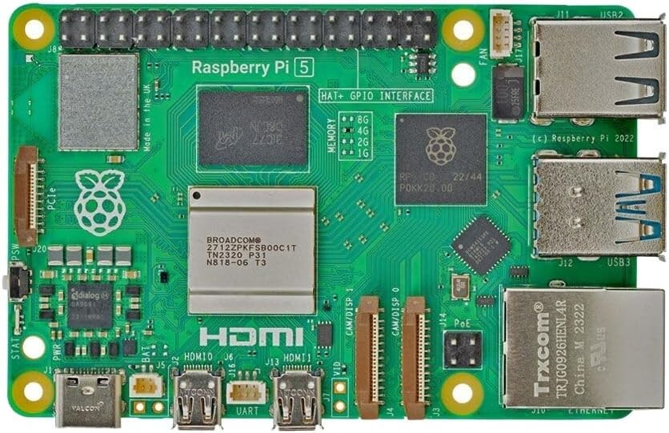
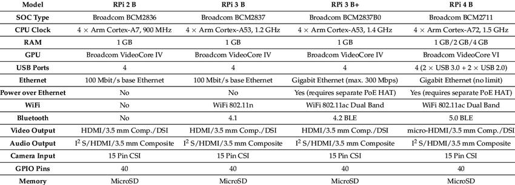
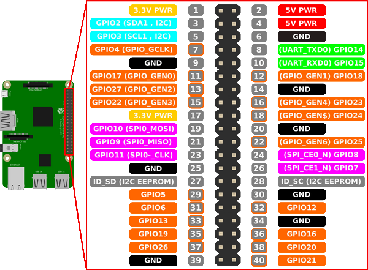
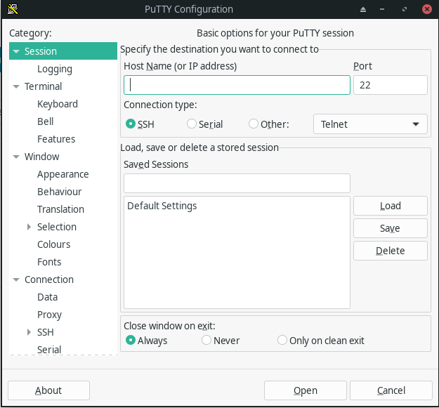
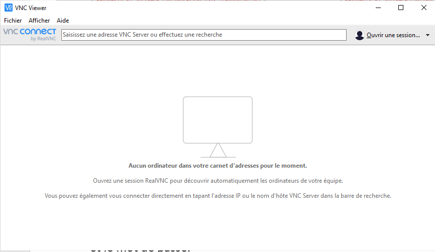

Raspberry Pi

Vidéos présentation
Différents types de Raspberry Pi
Le Raspberry Pi est un nano-ordinateur monocarte à processeur ARM.

RaspberryPi Zero

RaspberryPi 2

RaspberryPi 3

RaspberryPi 3b+

RaspberryPi 4

RaspberryPi 5

GPIO
Ce connecteur à 40 points est le moyen fourni par les créateurs du Raspberry Pi pour nous permettre d’accéder aux ports d’entrée/sortie du processeur BCM2837. GPIO signifie « General Purpose Input/Output » (entrée/sortie à usage général). Ce sont les 40 broches que vous pouvez voir sur le Raspberry Pi, près du bord de la carte

Configuration initiale : Premier démarrage
L’utilisateur par défaut est : pi
Le mot de passe par défaut est : raspberry
ATTENTION sous un système Linux les mots de passe n’apparaissent pas quand on les tape au clavier dans le terminal.
Remarque : le système RaspiOS est en évolution et toujours en développement, les menus et les logiciels peuvent changer d’une version à l’autre.
Serveur Graphique sous Linux
Les notions de serveur graphique, de bureau et de gestionnaire de fenêtre.
Le serveur graphique est le programme qui permet de passer en « mode graphique » GUI en utilisant les fonctions avancées de la carte graphique. Il gère notamment le clavier, la souris, les polices de caractères, l'écran (résolution, nombre de couleurs, etc.) et la carte graphique, et fournit aux programmes qui le demandent un affichage et un contrôle. Sous Debian, c'est le serveur X.Org qui est utilisé.
Le bureau est le programme qui s'occupe d'afficher un menu, une barre de lancement, une barre des tâches, des icônes sur le bureau, etc… Il existe également de nombreux bureaux sous Linux, mais les deux plus connus sont GNOME et KDE.
Le gestionnaire de fenêtre s'occupe de « décorer » les fenêtres, en leur ajoutant des bordures, une barre de titre, et des boutons de contrôle pour pouvoir les réduire, les fermer ou les agrandir. Les bureaux graphiques fournissent normalement leur propre gestionnaire de fenêtres : celui de GNOME s'appelle Metacity, mais il est possible d'en utiliser une autre.
Avoir un serveur graphique et un gestionnaire de fenêtre est obligatoire pour travailler « en mode graphique » ; mais on n'est pas obligé d'avoir un bureau ! Certains gestionnaires de fenêtre font aussi office de bureau minimaliste (Windows Maker affiche par exemple un menu de lancement rapide). Normalement, l'utilisateur peut choisir n'importe quelle combinaison de gestionnaire de fenêtres et de bureau, mais certains bureaux recommandent un gestionnaire de fenêtres particulier.
Vous pouvez toujours démarrer le bureau en tapant « startx » dans le terminal. Une fois lancée, pour quitter l’interface graphique il vous suffit simplement de vous déconnecter de la session.
Le gestionnaire de paquet
Sous le système d’exploitation RaspiOS, pour installer un logiciel, il faut utiliser un gestionnaire de paquet nommé APT (Advanced Packaging Tool).
Ce logiciel permet d’installer, de mettre à jour et de désinstaller les applications disponibles pour votre Raspberry Pi.
Les commandes utiles
Toutes les commandes suivantes sont à exécuter dans un terminal (exemple LXTerminal).
Pour chercher un logiciel, vous pouvez utiliser la commande suivante avec des mots clés de recherche :
apt search nom_du_logiciel_recherché
Une liste de logiciel contenant le mot du logiciel apparait : Avec le nom puis une description : nom - description.
Une fois que vous connaissez le nom exact du logiciel, vous pouvez l’installer de cette manière :
sudo est nécessaire pour vous donner les droits d’administrateur
L’installation nécessite parfois une autorisation où l’on peut répondre O pour Oui ou n pour Non.
sudo apt install nom_du_logiciel
Pour en supprimer un, faites ceci :
sudo apt remove nom_du_logiciel
Pour mettre à jour la liste des logiciels disponibles, il faut régulièrement saisir la commande suivante :
sudo apt update
Pour mettre à jour les logiciels, une seule commande suffit :
sudo apt upgrade
Avec ces 5 commandes, vous devriez pouvoir vous en sortir facilement :)
Petit conseil les touches flèches haut/bas permettent de voir les commandes déjà tapées.
Activer le contrôle par SSH
Le protocole Secure Shell (SSH) est une méthode permettant d'envoyer en toute sécurité des commandes à un ordinateur sur un réseau non sécurisé. SSH a recours à la cryptographie pour authentifier et chiffrer les connexions entre les appareils.
Activer SSH sur la carte raspberry pi
Démarrez le Raspberry Pi et connectez-le au réseau.
Il ne nous reste plus qu'à accéder aux paramètres de configuration du Raspberry Pi en exécutant la commande suivante dans le terminal :
sudo raspi-config
Déplacez-vous dans le menu "Interface Options" puis "SSH" et activez-le. Pour terminer, sélectionner "Finish" et rebooter le Raspberry Pi.
Depuis un autre PC
Depuis une autre machine (PC, Téléphone, …), lancer un logiciel de connexion SSH comme le logiciel Putty et en entrant :
- L’adresse IP de la carte et le port 22,
- Cliquez sur Open,
- Le nom d’utilisateur et le mot de passe.

Activer le contrôle par VNC
VNC est un système de visualisation et de contrôle de l'environnement de bureau d'un ordinateur distant. Il permet au logiciel client VNC de transmettre les informations de saisie du clavier et de la souris à l'ordinateur distant, possédant un logiciel serveur VNC à travers un réseau informatique.
Activer VNC sur la carte raspberry pi
Démarrez le Raspberry Pi et connectez-le au réseau.
Il ne nous reste plus qu'à accéder aux paramètres de configuration du Raspberry Pi en exécutant la commande suivante dans le terminal :
sudo raspi-config
Déplacez-vous dans le menu "Interface Options" puis "VNC" et activez-le. Pour terminer, sélectionner "Finish" et rebooter le Raspberry Pi.
Depuis un autre PC
Depuis une autre machine (PC, Téléphone, …), lancer un logiciel de connexion SSH comme le logiciel Putty et en entrant :
- L’adresse IP de la carte et le port 22,
- Cliquez sur Open,
- Le nom d’utilisateur et le mot de passe.
